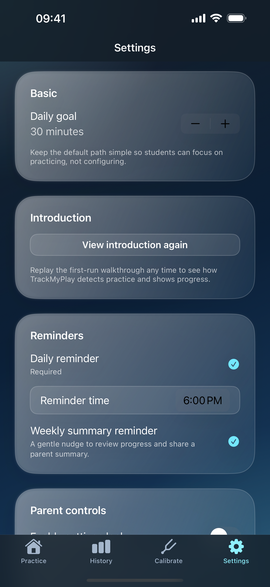

Supported instruments
TrackMyPlay currently supports automatic active-practice tracking for piano, guitar, and violin.
This page is synced to the latest public release materials for TrackMyPlay 1.1 build 28. It reflects the current supported instruments, updated screenshots, and the privacy-first product story shipped with the latest App Store submission.
TrackMyPlay currently supports automatic active-practice tracking for piano, guitar, and violin.
Audio recognition happens on device. No raw recordings are uploaded, and no account is required to use the app.
Public support email for this release: fretio0719@gmail.com.
TrackMyPlay uses on-device audio detection to identify matched playing for the selected instrument. It focuses on active piano, guitar, or violin practice instead of simply timing how long the app stays open.
The trust feedback helps you see whether the app is hearing the selected instrument clearly enough. If trust is low, adjust your position, environment, or instrument setup before continuing.
Yes. The session review flow lets you quickly correct the result and add a note before it becomes part of your history.
No. Raw audio is not uploaded. Recognition happens locally on your device, and your practice data is stored locally unless you choose to export it.
Use the session review step before saving. That flow exists specifically so you can correct timing and keep history accurate without needing to repeat the session.
Check the settings screen to confirm goals and reminders are enabled. Live Activities also depend on iOS support and device settings for live updates.
Email fretio0719@gmail.com with your device model, iOS version, and a short description of what happened.

This support site now points to the refreshed 1.1 screenshot set from the release package so help content matches the shipped UI.